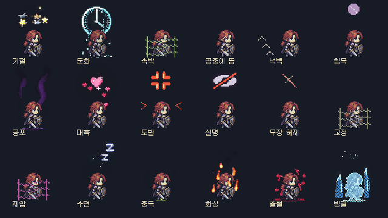

Tracefolio REPORTS & ISSUES
Tracefolio REPORTS & ISSUES DotAction작업 결과
DotAction작업 결과상태 이상FX 확대와 화상·빙결·출혈·도발·실명 보정
검증 대기시야 축소를 폐기하고 남은18종 FX를1.35배 확대했습니다. 화상 흰색 점멸 제거, 캐릭터 전체 빙결, 출혈/도발/실명을 재제작했습니다.
작업 결과
구현·정규화·Godot 실제18종 렌더·웹 문서 빌드 완료. 사용자 최종 시각 승인과 전투 난전 가독성은 미확인입니다.
변경 내용
적용 내용
PixelFX 프로젝트 원본 tools/status-fx-v2.mjs로 도발 분노/실명 눈 차단/화상 불꽃·연기·불씨/출혈 상처·핏방울·혈점을 재제작했습니다. 화상 원본의0.6초 흰색 몸체 프레임을 사용하지 않습니다. frozen_body.gd는 현재 캐릭터·장비 알파 실루엣 전체를 얼음 재질로 변환해 캐시합니다. 전체 FX1.35배,부하1.08/보스2.7이며144×144/발72,116/20FPS 앞뒤36시트입니다. 시야 축소 상태/시야 처리/런타임 매핑을 제거하고 밤의 저주는 실명을 적용합니다. 폐기 출력은 원본 경로에 보존했습니다. 웹 문서·아트 가이드·카탈로그를 갱신했습니다. 
검증
Godot4.7.2/GTX970 OpenGL에서 실제 상태18종 적용 후48프레임 렌더,최종 스크립트 오류 없음. 화상 몸체 점멸 없는 원본/빙결 캐릭터 전체/도발·실명/출혈을 렌더에서 확인했습니다. node tools/build-design-catalog.mjs 및 node docs/build.mjs 성공(15페이지/340이미지). workbook 상태18행/FX18행 확인. 테스트·회귀는 요청하지 않아 실행하지 않았습니다.
남은 사항
전투 난전과 모든 보스 체형,사용자 최종 시각 승인은 미확인입니다. user:// 쓰기 제한/기존 종료 텍스처3개 경고가 남습니다. 게임 배포 빌드 미실행. 중앙 게시 결과는 별도 기록합니다. 전역 규칙 변경 없음: 기존PixelFX 원본 보존/실제 배우 실루엣 규칙을 적용했습니다.
작업 시간
- 제안 시간: 2026-11-18 16:08:05 KST 시작,10분 이내 수정·렌더·문서 갱신
- 실제로 완료된 시간: 수정·렌더·문서 갱신 2026-11-18 16:13:03 KST 완료(4분58초),중앙 등록은 진행 중.
- XERJ: 미사용 — PixelFX 원본의흰색 몸체 프레임과 상태 참조/실제Godot 렌더로 확인했습니다.